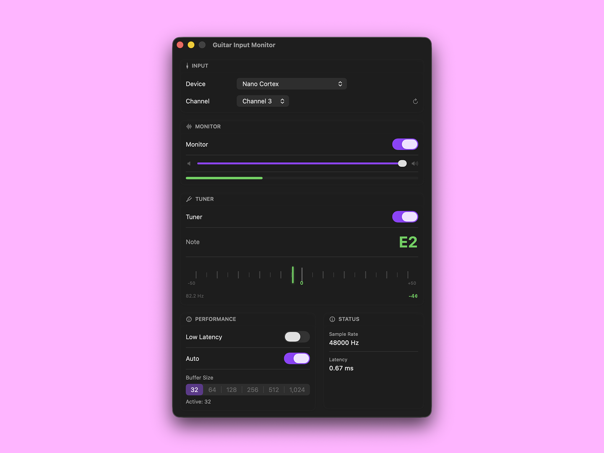
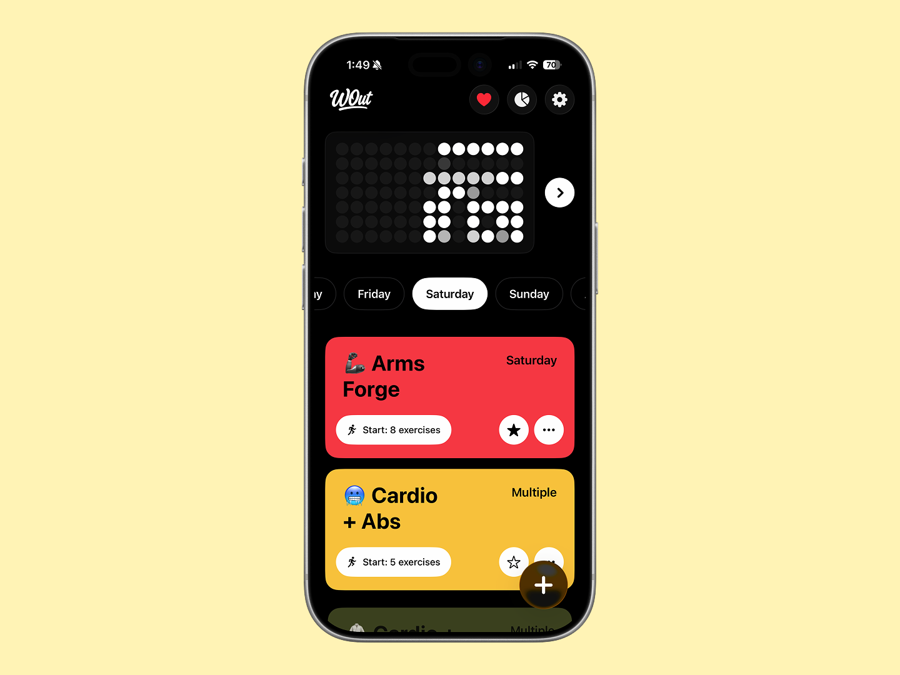
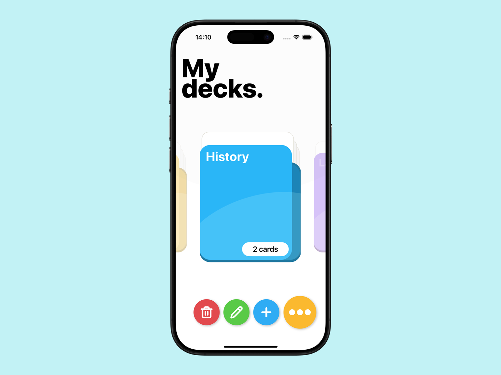

Personal Projects

Guitar Input Monitor
February 2026 - OngoingGuitar Input Monitor is a native macOS app that delivers ultra-low latency audio monitoring for guitarists and musicians. Built with Core Audio, it features real-time monitoring with adjustable buffer sizes as low as 0.36ms, a built-in chromatic tuner with visual feedback, multi-channel input support, and menu bar integration. Perfect for home practice, live performance, and music production.


WOut - Weekly Workouts
February 2025 - OngoingWOut is a native iOS app built with SwiftUI and SwiftData, following an MVVM architecture for a clean and maintainable codebase. It is designed as offline first, with workouts and plans stored locally and synced through iCloud for fast, reliable use anywhere. HealthKit provides fitness data integration, while Foundation Models and Apple Intelligence power on device workout generation with privacy by default.


LearnLoop - iOS Mentorship Project
January 2025 - OngoingI’m mentoring a junior iOS developer through the development of LearnLoop, a flashcard study app. I provide guidance on architecture, code quality, testing and design through code reviews and regular technical discussions, with a focus on building confidence and independence as an iOS engineer.